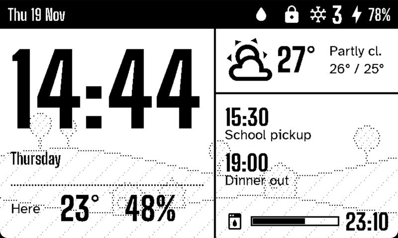

Sticky
Home Assistant on a 7.5-inch e-ink screen. Calm Glance pages anyone can read from across the room, and big touch Do tiles for the air conditioning, the door, the vacuum and the dishwasher.

Glance · Today · 1 of 14
Tap the left or right edge of the screen to change page, like on the real Sticky. Keys: ← → pages, Space Glance / Do, R turn. These are the real screens, drawn by the firmware in the Mac preview with example data.
What it does
- Two sides. Glance for everyone: clock and the day, calendar, weather, reminders, timer, guest Wi-Fi and a few slow pages. Do for the person who runs the house. The AI button switches; Do goes back to Glance after 5 minutes.
- One big number per page, readable across the room. Page dots appear when you change page and go away after 10 seconds.
- Honest data: "Updated 4 h ago" when weather or GitHub data is old, and a NOW marker on the hourly weather.
- Wizards with step dots for the dishwasher (program, options, start time) and the vacuum (mode, power, route). The door always asks first.
- Battery friendly: deep sleep on battery, wakes on a button or every few minutes to refresh.
- Safe by design: every action goes through one Home Assistant script that refuses anything not on its list.